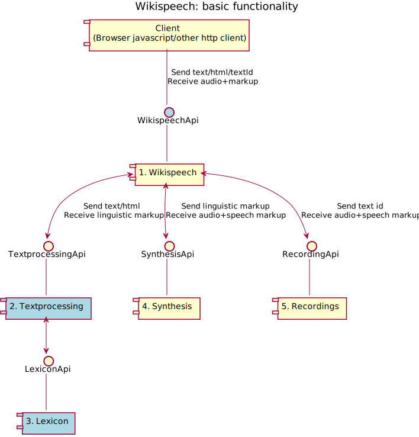

The code, tests, examples and documentation in wikispeech_mockup is an initial illustration of how a wikispeech server can be implemented.
The code contains a simple web server, written in python with the flask extension, that implements the three urls wikispeech, wikispeech/textprocessing, and wikispeech/synthesis.
It is intended to run as a standalone server. Later it may be rewritten, for example in php if it will be used as a mediawiki extension.
The wikispeech route takes text and language as arguments, and passes the text to textprocessing and synthesis. The returned json contains an audio url and a list of tokens with timing information, to be used by the player. The textprocessing route returns json markup. The synthesis route takes language and json markup as arguments.
The recording api illustrated in the diagram below is not implemented. Its function is to allow for recordings to be played back in the same way as synthesis, with timing markup. It can easily be added, and at least as a simple example probably should be. TODO
Textprocessing and synthesis is defined in a configuration file, currently as python . At a later stage this will be editable by users, so should be shifted to some database instead, and corresponding routes added to the apis. The configuration is very simple and needs to be expanded as the needs arise.
Textprocessing is defined